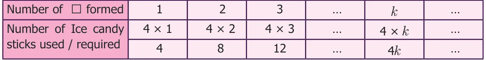
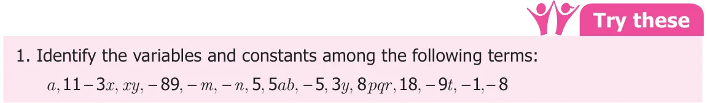
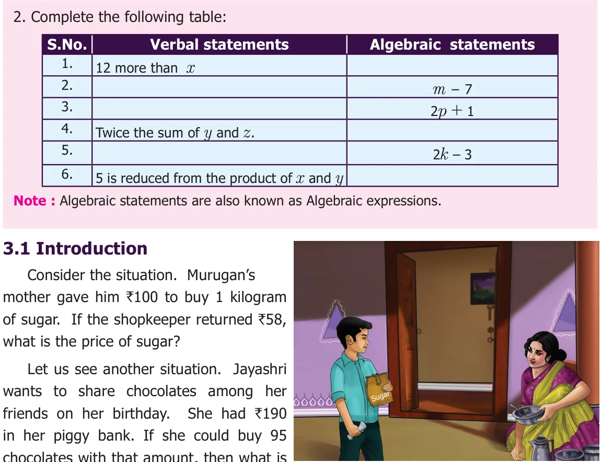
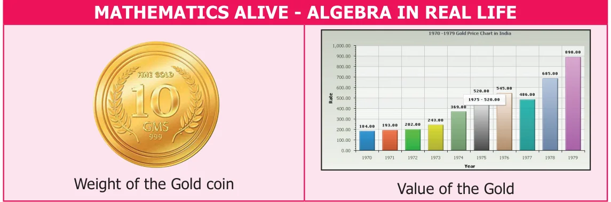

\(29 + 3x + 5y\)
Chapter
\(3 8ab + 4ab + 2ab\)
ALGEBRA
Learning objectives
- To identify variables and constants in the given terms of an algebraic expression.
- To find the co-efficients of the terms of an algebraic expression.
- To identify like and unlike terms.
- To add and subtract algebraic expressions with integer co-efficients.
- To form simple expressions in two variables.
- To understand simple linear equations and solve problems.
Recap
In class VI, we have learnt how geometric patterns and number patterns can be generalised using variables and constants. A variable takes different values which is represented by x,y,z... and constant has numerical values such as 31, \(- 7\), \(\frac{3}{10}\) etc. For example,
- The number of Ice candy sticks required to form one square (Ƚ) is four sticks, for
two squares is eight sticks, for three squares is twelve sticks and so on. Continuing in the same way, it is clear that if the number of squares (Ƚ) to be formed is k (any natural number), then the number of candy sticks required will be \(4 \times k = 4k\), where k is a variable and 4 is a constant. This can be observed in the following table:

- Observe the following pattern
\(7 \times 9 = 9 \times 7\), \(23 \times 56 = 56 \times 23\), \(999 \times 888 = 888 \times 999\)
This can be generalised as \(a \times b = b \times a\), where a, b are variables.


the price of one chocolate? Did you get the answers? How did you work out? You might have created numeric expressions like \(100 - 58 =\) ? and \(190 \div 95 =\) ? and then solved it. Isn't it? In both the cases, question mark (?) stands for an unknown value. Instead of using question marks everytime, we could use the letters like x, y, a, b ... Let us learn more about this interesting branch of mathematics which deals with the methods of finding the unknown values.
